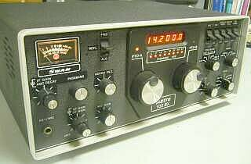
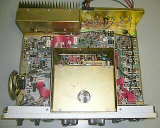
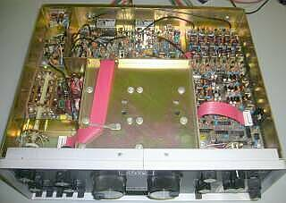
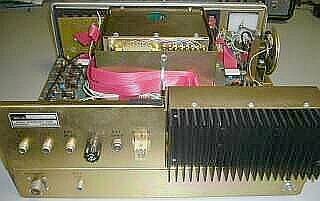
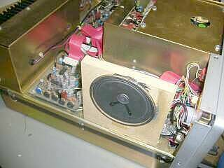
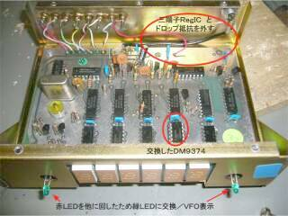
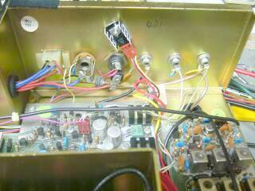
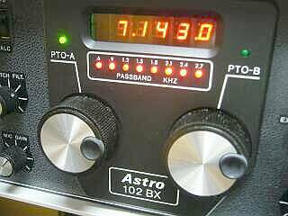

 |
デュアルＰＴＯ（ＶＦＯ）を採用
７セグメントＬＥＤ表示の下にあるＬＥＤ表示は、パス・バンド・チューニングの巾を表しています
ＣＷ・Ｎを選択すると、この帯域巾も狭まるように設定されています
ＲＦゲインコントロールとは別に、ＩＦゲインコントロール、そしてＡＧＣディレイタイムについても、フロントパネルに調整ＶＲが配されています
フロントパネルに配されたＭＩＣジャックは、ＣＷキーの接続も出来る排他使用の可能な設計がなされています
なお、マイク入力インピーダンスは、４７ｋΩです |
 |
トップ部
ご覧のようにシンプルな構造で、整然と基板が置かれています
各基板を接続するフラット・ケーブルのコネクタは、一般的なＤＩＰ-ＩＣ型が採用されています
スピーカーは、ご覧のように左サイドに内蔵されています
黒色で巾１０ｍｍの金属板で、スピーカーのマグネット部を巻くようにして、ビス１本で固定されています |
 |
ボトム部
やはり整然と基板が並んでいます
シャーシ・メッキも綺麗なままです
アルミ板の採用はありませんが、基板類は全てガラスエポキシ両面基板です
ＰＴＯ（ＶＦＯ）部は、構造的にも頑強に作られています |
 |
リア・パネルは、ご覧のように非常にシンプルです
電源入力（ＤＣ１３．８Ｖ Ｍａｘ２０Ａ程度）
外部スピーカー（φ６ジャック）
以下、ＲＣＡジャック
リレー出力（リニア・アンプ制御）
ローカル・オシレータ入力
電鍵／ＫＥＹ（フロントパネルに、ＭＩＣ／ＫＥＹ兼用φ６ジャックも有り）
外部ＭＯＤ（ＡＵＸ）入力
ＡＮＴ：Ｍ型レセプタクル
あとは３Ａヒューズホルダとヒートシンクです |
 |
今回（今のところ！）、唯一の改造です
内蔵スピーカーの取付は、トップ部の写真にあるように、マグネット部分を直接金属ベルトで巻いて固定する方法がとられていました
このままでは、非常に軽い音色しか得られませんので、厚さ１０ｍｍの板を加工して写真のように取付直しをしてみました
こうすることで、スピーカー・ユニットは、純正（内蔵）のままですが、音色はずいぶんと落ち着きます
この試験結果が良好なので、きちんとケースのスピーカー窓位置に合うよう木板を加工し、固定します
ここでは接着剤が大活躍です！ |
|
写真でおわかりの通り、全体を見ての印象としては、業務用無線機と思えるような内容／仕上がりを持っているように思います
経年変化に伴って生じる「がさがさゴソゴソ」という受信時のノイズ対策などには少々時間を取られましたが、決定的な問題に遭遇することなく現役復帰ＯＫ・・・・「現役合格」とすることができました
スピーカー取付の変更により、シャカシャカした受信イメージは無くなり、落ち着いた雰囲気で受信が出来ます（Ｓ９が４０ｄｂμＶｅｍｆですし！）
ただ、この時代の特徴でもあるロー・ハイともカット気味な音色であることは否めません・・・いわゆる昔からの通信向けと言われる音色です（最近の「いい音」というのがきちんと再現できない・・・極論すると皆同じように聞こえてしまいます・・・皆さまの「いい音」への努力が、聞いてその努力をあまり感じられない！？ もちろん音の良い悪いは分かります！）
通信という目的からして、これはこれで正解としましょう！ |
後に、ＷＡＲＣバンドとＲＴＴＹモード（ＬＳＢ送信＆ＣＷ・Ｎ受信））を追加、オプションとして単独のＣＷフィルタ（６ポール ４００Ｈｚ巾）が用意されたＡＳＴＲＯ １０３ が発売されています
気になっていた点に手を付けました |

５ＶＲｅｇ部分を取り除いてリアパネルへ
大きくスペースが空きました
ＰＴO A/B 動作表示LEDを緑に変更 |
カウンタ表示・・・7セグメントLED表示の１ＫＨｚ台の桁が、通電時間の経過によって変な表示になっていることから、カウンタ・ユニットを分解することになりました
まず、7セグメントLEDドライバ/DM9374Nの入手が大変・・・元の10倍！くらいのコストがかかってしまいましたが、なんとか海外から入手（古いものの補修は、こういった面が大変！）
基板への直付けは止めてソケットにしました
この便に、ここでの発熱源である５Ｖの定電圧回路をリアパネルに移行しました（サービス・マニュアルの最後に、改造するように書かれている）
パスバンド幅を表示するLEDのひとつが暗くなっていて気になるので、同じものと思われるＰＴO A/B 動作表示のLEDを外して移行しました
そのため、ＰＴＯ A/B 動作表示のLEDを、緑のものに変更しました
LEDも長く使えば、輝度も大きく変化することを実感しました（多少ばらつきがあるので全部換えようかとも思ったのですが、今回は手抜き！） |

電源コネクタ右の外部スピーカージャック
この接点に接触不良があったため
現在は、別の形状のものに交換をしています
ノイズ対策：電解ｺﾝﾃﾞﾝｻも10個近く交換 |
サービスマニュアルの記載に従って、そもそもカウンタ部にあった、ＤＣ１２ＶからＤＣ５Ｖを得る定電圧回路部分を、写真のようにリア・パネルに移行しました
７Ｐの立てラグひとつと、ＩＣの発振止めのＣのみの追加です（穴開けはひとつだけ！）
気は心とばかりに、簡単なヒートシンクを付けておきました
写真は、リアパネルを内側から撮ったものです
この結果、カウンタ表示部のシャーシ温度はずいぶん冷たく！？なりました
オリジナルの状態では、時間の経過とともにかなり温度が上昇します
ＰＴＯユニットの真上ですから、ＰＴＯのドリフトにも当然影響したと思います（改造指示は、きっとこの対策かと）
この状態で、リアパネルは受信のみにおいても結構暖かくなります |
 |
最終的なフロントパネルの様子です
時間の経過とともに、表示がおかしくなっていた１ＫＨｚ台の表示も、入手に苦心したドライバＩＣの交換により安定した正常な表示になりました
暗くなったパスバンド表示用のＬＥＤの交換に使い回したＰＴＯ動作表示ＬＥＤの後釜については、ご覧のように緑色のものを採用しました（オリジナルの様子は、本ページＴＯＰにある写真で確認できます）
|
落ち着いて受信が出来る状況になりました
ＰＴＯ（ＶＦＯ）の安定度も、熱源を移動させたせいもあって、実用上問題がないと判断しました
フロント・パネルにあるＩＦゲインを絞ることで、検波器の入力を絞ることが出来ますので、ちょっと手をかける気になれば（このボリューム調整だけで）、Ｓ／Ｎも良く、結構良い音で受信が出来ます
ダイヤル1回転２５ＫＨｚとバンド展開も早いし、使い勝手が良さそうな気がしてきました・・・・ |
|
|